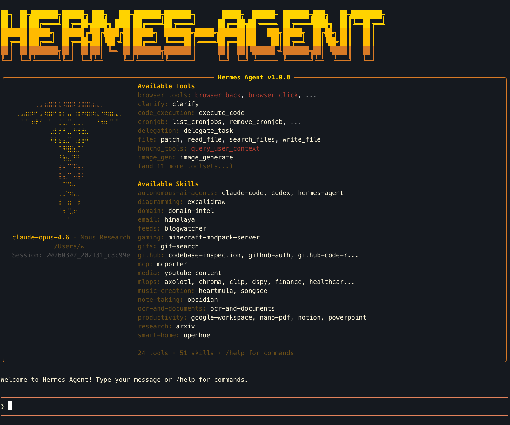
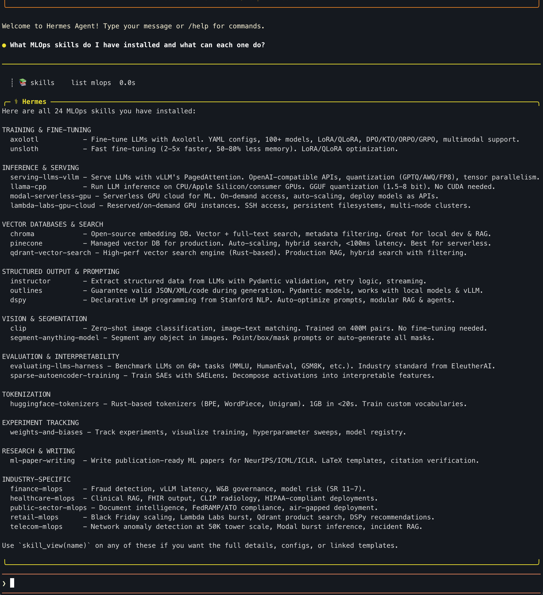
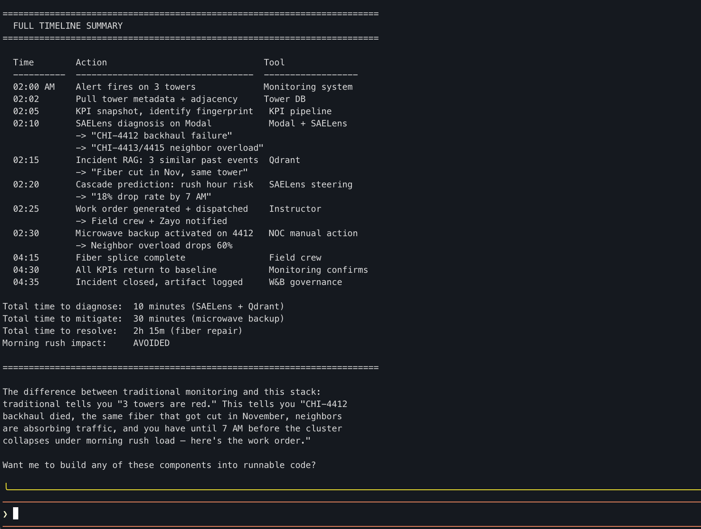

A terminal AI agent with 40+ tools and 51 industry skills.
Built on NousResearch hermes-agent · Enterprise MLOps overlay by QbitLoop
Every team that runs ML in production has the same problem: the knowledge to operate it lives in people's heads. The senior engineer who knows the fraud model's blind spots, the vLLM timeout trick, the W&B artifact naming convention — that's not in any runbook.
When that person is on vacation, it's a 2am page and a four-hour war room. When they leave, the knowledge walks out with them.
Hermes captures that knowledge as skills — plain-text SKILL.md files that describe tools, workflows, and domain rules. The first deployment might take 6 hours. The tenth takes one command.
Each vertical ships with pre-built skills that encode domain rules — no prompt engineering required. Copy the commands below and run them.

Hermes TUI on launch: pixel-art banner, Available Tools panel (left), Loaded Skills panel (right)
Session context + persistent MEMORY.md (~800 tokens) + USER.md profile (~500 tokens). Agent remembers preferences across sessions.
Reason → Act → Observe, up to 60 iterations per task. Chains multiple tool calls automatically to solve complex multi-step problems.
Terminal, file, web, browser, vision, image gen, code execution, cron, Slack, Discord, Telegram, WhatsApp — all built in.
SKILL.md format: plain text files that give the agent domain knowledge. Searchable from agentskills.io. MIT licensed.
OpenRouter (200+ models), Nous Portal, or custom endpoint. Switch providers with one command. No vendor lock-in.
Local, Docker, E2B, Modal, or SSH remote execution. Agent code stays on your machine; commands run in the sandbox.

Agent auto-categorizes 24 installed MLOps skills across Training, Inference, Vector DBs, Vision, Eval, and Industry verticals
Every query shows its reasoning in real time via tool calls. Here's what happened when asked to diagnose a fraud model outage:
| Tool Call | What It Means |
|---|---|
| 📚 skill finance | Loaded finance-mlops SKILL.md — now knows fraud detection patterns, SR 11-7 model risk rules, vLLM workflows |
| 📚 skill weights-and-biases | Loaded W&B skill — uses experiment tracking to find when model drift started |
| 📚 skill vllm | Loaded vLLM skill — for diagnosing the inference serving layer |
| 📚 skill instructor | Loaded Instructor skill — for structured output when extracting model diagnostics |
| 💡 computing... (48.2s) | Synthesizing all loaded skills into a coherent diagnosis plan |
The key insight: the agent pulled 4 relevant skills automatically from one plain-English prompt. No one told it to load W&B or vLLM — it reasoned that a fraud detection outage would involve those tools. This is institutional knowledge capture in action.

Chicago cluster: 3 towers flagged at 2am, root cause isolated in 10 minutes, morning rush impact avoided
| Metric | Value |
|---|---|
| Diagnose to root cause | 10 minutes |
| Mitigate (microwave backup) | 30 minutes |
| Full resolution (fiber repair) | 2h 15m |
| Morning rush impact | AVOIDED |
| Step | Tool | Why |
|---|---|---|
| Feature drift detection | W&B | Log PSI, compare distributions, governance artifacts |
| Model version audit | W&B Registry | Check who deployed what, when |
| Serving diagnostics | vLLM metrics | Latency, cache usage, throughput |
| FN cluster analysis | Instructor | Structured extraction of new fraud pattern |
| Threshold re-tuning | W&B Sweeps | Bayesian optimization of threshold + class weights |
| Burst retraining | Modal | Spin up GPUs for fast retrain |
| Incident documentation | W&B Artifacts | SR 11-7 compliant audit trail |
| Ongoing monitoring | Modal + W&B | Scheduled feature health checks + automated alerts |